There are endless amounts of cloud storages out in the current market. Having too many options makes it difficult to keep things organized and simplified. Bridge is here to help consolidate all cloud storages in one place to keep things synchronized, simplified, organized and shareable.
DESIGN ROLES
UX Design
Visual Design
Branding & Identity
DELIVERABLES
User Surveys
Personas
User Stories and Flows
Competitive Analysis
Paper Prototype
Wireframes
User Testing
Visual Design
TOOLS
Illustrator
Photoshop
Whimsical
InVision
Usability Hub
Overview
PROBLEMS
Easy export to other cloud system
Organization/easier navigation
Security when sharing
Collaborating
INSIGHT
Our users are familiar with several cloud storages and use more than one
SOLUTIONS
Add capability to sync multiple cloud storages
Create categories with images to inspire organization
Show who’s sharing the file with profile icons and add sharing options
Share with other using links and collaborate real-time
Discovery
USER RESEARCH
95.2%
use cloud storage services like Dropbox, Google Drive, iCloud, etc., showing the prevalence and importance
85%
use it for personal use while 60% used it for work
75%
of the participants use Google Drive the most, followed by iCloud and Dropbox
80%
responded that sharing content and storing file was the most important
50%
of the respondents said that they were creating new content (notes, documents, etc.)
19%
said it was easy to use
*Percentage based on 21 respondents
COMPETITIVE ANALYSIS
In order to determine the direction for Bridge, I needed to deep dive into the market and perform a competitive analysis and SWOT analysis on the competitors. In the survey, I asked the participants which storages they used the most. Google Drive, iCloud, and Dropbox were the top three. But since I wanted to create a more creative cloud storage product for the creatives, I conducted a competitive analysis on Google Drive, Pinterest and Dropbox.
FINDINGS
From the analysis, we determined that a new cloud storage and organizer with the following traits would be a great competitor:
1. Accessible anytime and anywhere with real-time updates on multiple devices
2. Strong cloud security features (ex: various sharing modes)
3. Stores all types of files: images, videos, creative docs, etc.
4. Intuitive and clear functionality
5. Fast sync/upload
6. Own creation apps
7. Accurate visual search
8. Flexible cost and plan
Information Architecture
USER PERSONAS
Daniel
26 UX Design Student from San Francisco, CA
Frustrations
Limited creative doc functions
Too many different softwares
Slow upload time
“If there was a wider range of various creative documents I can create on the cloud, it would save me so much time and streamline the creative process.”
David
28 Software Engineer from San Diego, CA
Frustrations
Slow upload time
Unintuitive user interface
Staying connected with others
“Cloud storage could be more unified, synchronized, shareable and encrypted.”
USER STORIES
From the information gathered from market research and competitive analysis, I created a user story to prioritize the main features of the product. Then I created the user flows in Whimsical to illustrate how a user will go through the app to accomplish those goals.
As a new user
I want to create my account.
I want to change my security access.
I want to see storage space options.
As a returning user
I want to sign into my account.
I want to change my password.
I want to share files safely.
I want to collaborate within the creative docs with live updates.
I want to organize my folders.
I want to change my settings.
I want to access the files anywhere.
I want to access the files at any time.
I want to access the files on any device.
I want to link various cloud storages.
I want to create surveys.
I want to use photoshop.
I want to use illustrator.
I want to quickly upload files/folders.
I want to back up files.
As an administrator
I want to monitor cloud security.
I want to monitor and plan cloud capacity.
I want to approve/deny extra lcoud resources, keeping budget in mind.
USER FLOWS
Sharing/collaboratign documents
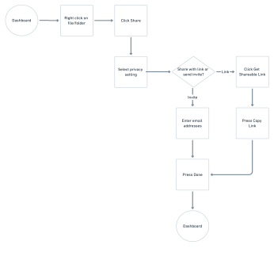
Branding & Identity
Bridge was chosen as the name of the storage because it accurately depicts what the product does. Not only does the product act as a Bridge connecting the various cloud storages in one place, but it also bridges the gaps and spaces and connects users by allowing the files to be accessed and shared from anywhere.
LOGOS
MIND MAPPING & LIST MAKING
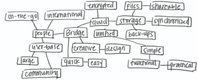
MOODBOARD
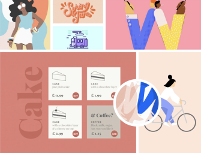
FONTS
COLOR PALETTE
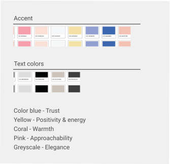
Visual Design
WIREFRAMES - LO-FI
Development
USABILITY TESTING
Once I was done creating my wireframes, I performed the Usability Testing to get some feedback. Participants had confusion around the CTA button labeled as Bridge Now on the Landing Page, so I updated that to Get Started.
Participant 1
Software Engineer
Confusion: Two options to sign up on Landing Page (Sign Up and Get Started)
Participant 2
Marketing Manager
Confusion: Organizing a file vs Sharing Benefit: Clear icons
Participant 3
Media Planner
Confusion: Organizing a file vs Sharing
A & B TESTING
Test 1 - Which cancel button do you prefer?
I had 13 participants who participated in the test. 100% of the group preferred the blue CTA button. Some of the reasons listed were: easy to tell, consistent with iOS guidelines, stands out more, etc. This helped me to be confident in my decision to keep the CTA button blue.
| A
| B
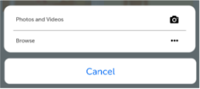
Test 2 - Do you prefer to have the 'Bridge Helps You...' section on the screen or not?
I had 12 participants in the test. 58% preferred taking out the section over the 42% who preferred to leave it. My biggest worry is being redundant, but the section seems like a good short summary for users who won’t be scrolling all the way down the webpage. The results may be more statistically significant if I had more participants, but since it’s not, I have decided to leave it as is and keep the ‘Bridge Helps You..’ section on the webpage.
| A
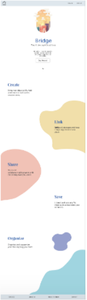
| B
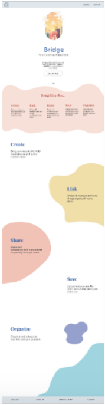
Test 3 - Which logo (on top left) do you prefer? Filled or outlined?
I had 14 participants who took the test. 14% preferred the filled logo vs the outline (86%)
| A
| B
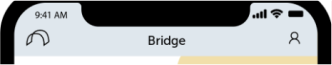
USER TESTING
Landing page alignment & shapes
I had 16 participants in the test. 69% preferred the center-alignment over the 31% (left). Some of the reasons being: less crowded, better use of space, etc.
I had 18 participants in the test. 56% preferred making the Recently Viewed files/folders a different size vs 44% who wanted to keep it the same as others.
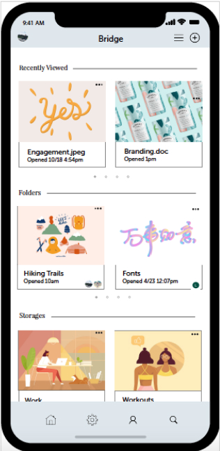
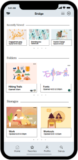
MOCKUPS
CTA buttons
I had 15 participants in the test. 53% preferred keep the CTA buttons colored vs 47%.
Old | Rectangular and colored
New | Rounded corners with shadow
Text under icons
I had 17 participants in the test. 71% preferred the icons with labels vs 29% who wanted to leave it out.
Old | No text under icons
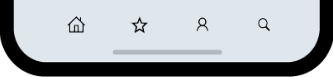
New | With text
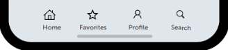
Text color
Old | Black
New | Gray
Final Product
MOBILE
DESKTOP
Conclusion
WHAT I LEARNED
What worked?
Clear icons, label Easy export to other cloud system Organization/Easier navigation Security when sharing Collaborating
What didn't
Need to explore more color logo options / + button location
What were your doubts going into the project?
How would mine stand out in the saturated cloud storages market?
What surprised you the most?
“Get Started button” This sometimes hinders users from scrolling down and reading the rest of the landing page information. Users click the Get Started button immediately instead.
What would you have done differently if given more time?
I would do A&B Testing on the “Get Started’ button specifically and on more variety of users.
What did you learn while doing this project?
Testing is key!! Style guide may change once A&B Testing kicks in (my font color, icons, etc.).
How will you use that information in the future?
Learn to trust the research process. Sometimes you may have a strong opinion about a design, but it won’t work ultimately. You need to learn to let it go (ex: landing page layout; Get Started CTA button).